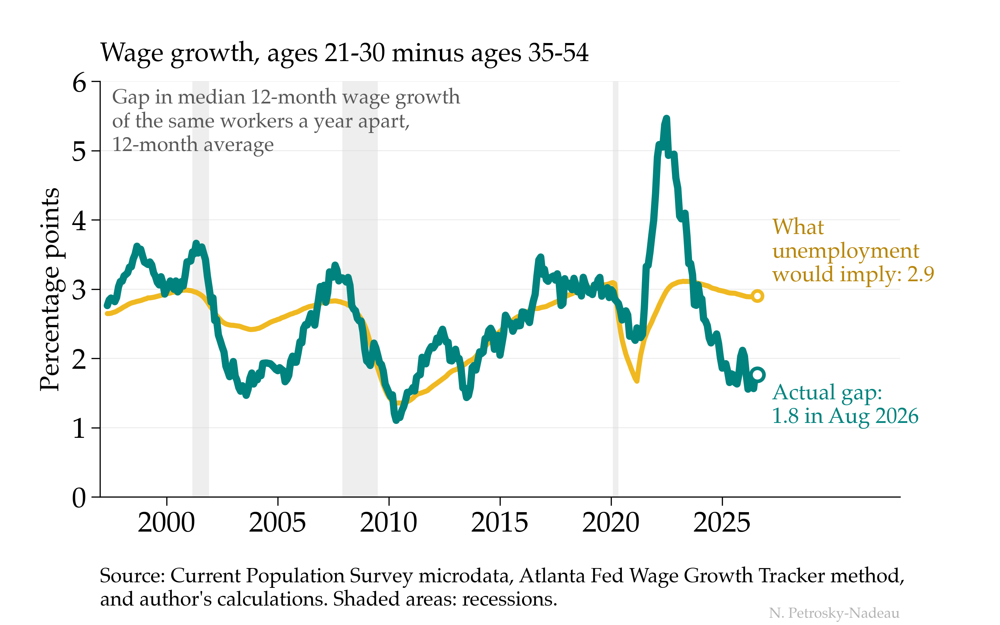
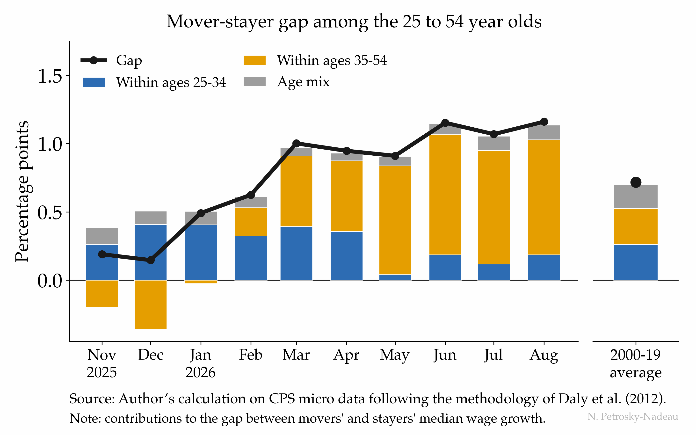
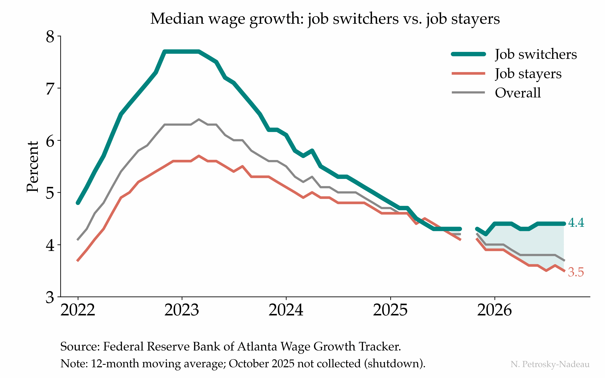
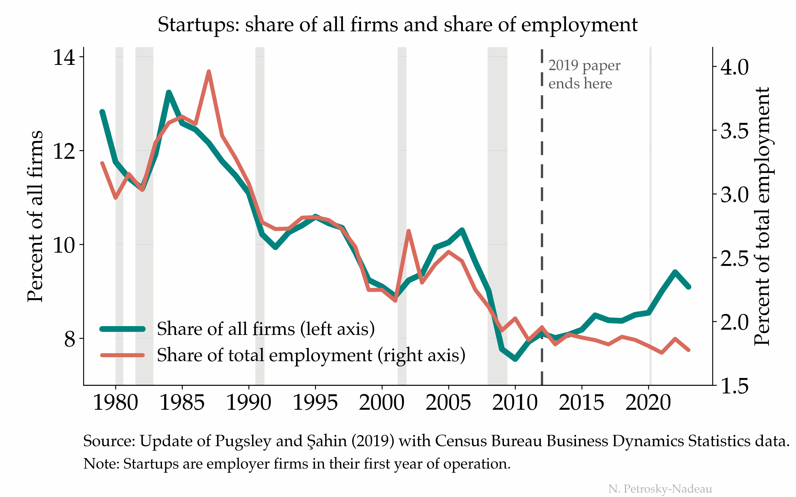
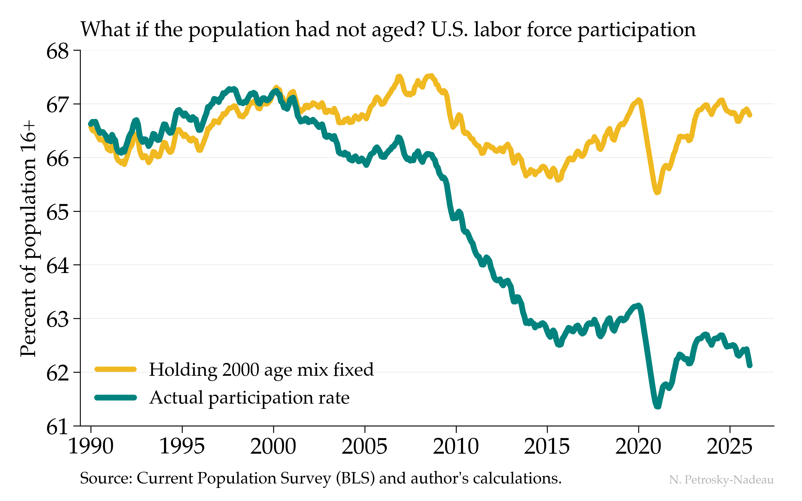
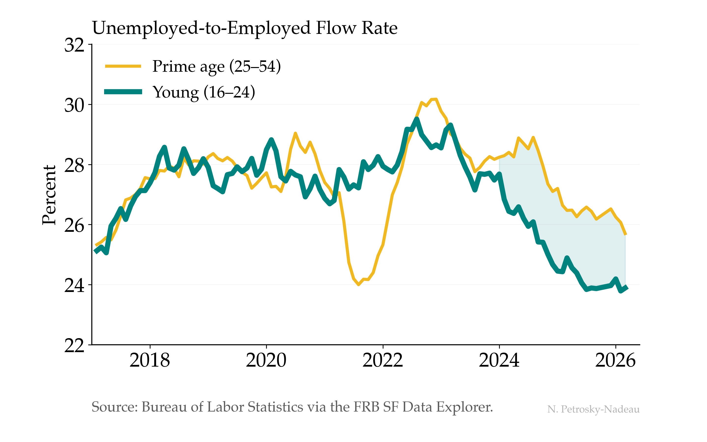
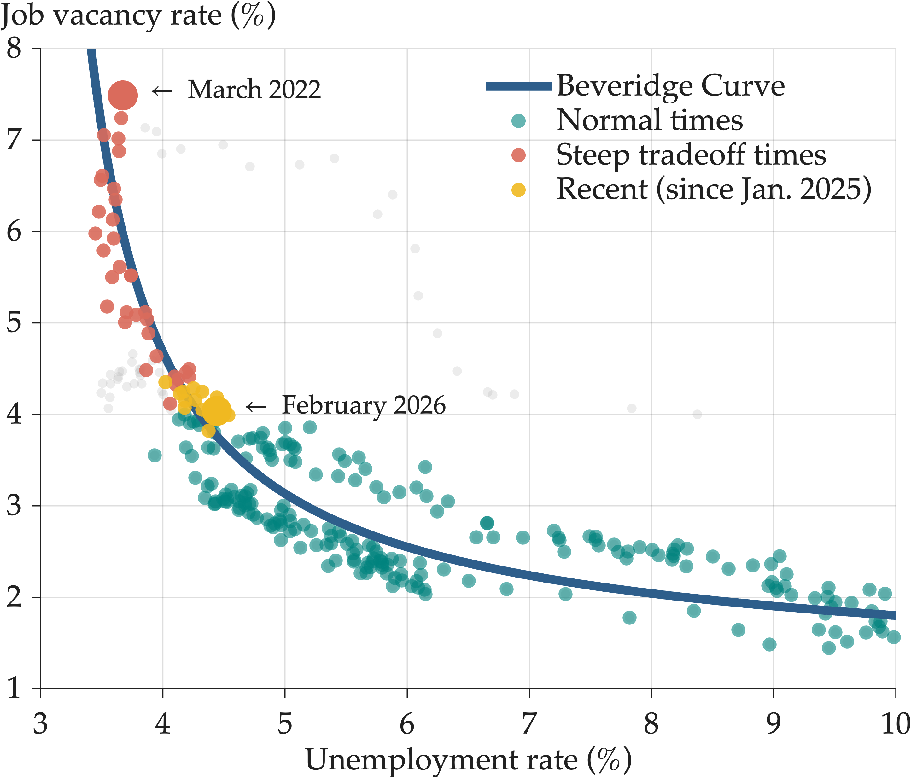
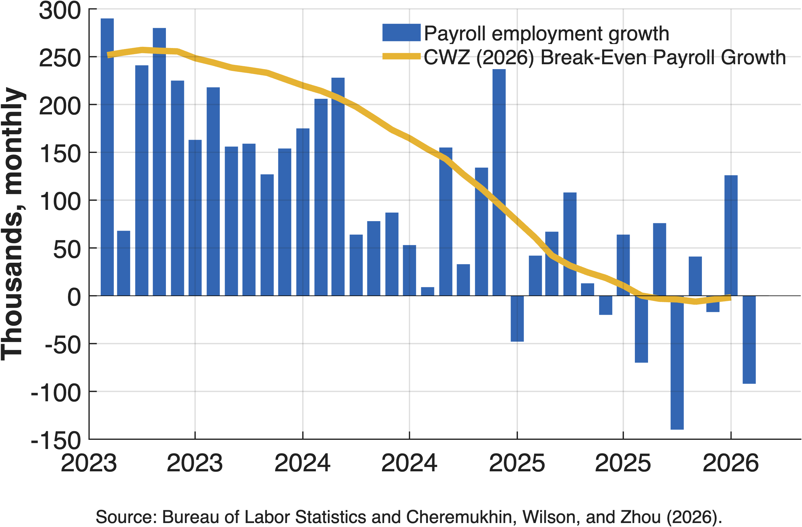

Insights › Economic Posts
Economic Posts
One chart and one data fact, released as the data come in, with the data to download

Wage Growth Has Tilted Toward Experience The wage-growth gap between 21-to-30 and 35-to-54-year-olds has narrowed to 1.8 points, mostly because mid-career raises picked up.
Who Is Getting the Raise for Changing Jobs? This year’s premium for changing employers is going mostly to movers aged 35 to 54, while younger movers get a little less than usual.
The Payoff to Changing Jobs Has Reopened The wage premium for changing jobs, gone in mid-2025, has reopened to 0.9 point as raises for stayers keep slowing.
More New Firms, But Not More Jobs From Them Startups have won back about a third of their lost share of firms since 2010, but their share of jobs sits near a series low. Job Switching Came Back, But Not for the Young
Job switching recovered for prime-age and older workers after 2022; for 16-to-24-year-olds it is still about six percent below its pre-pandemic norm.
Job Switching Came Back, But Not for the Young
Job switching recovered for prime-age and older workers after 2022; for 16-to-24-year-olds it is still about six percent below its pre-pandemic norm.

Aging, Not Attachment, Explains the Falling LFPR Holding the population at its 2000 age mix, participation would still be near 67%: aging, not a retreat from work, explains nearly all of the five-point drop.
Young Workers Are Finding Fewer Jobs Young and prime-age unemployed workers used to find jobs at nearly the same rate; since 2024 the young have fallen behind, about 24% a month against 26%. Started Together, Diverged, Now Narrowing
Prime-age women’s participation in the US and Canada, level in 1988, split for two decades; a record US rate of 78.5% has narrowed the gap to 6.6 points.
Started Together, Diverged, Now Narrowing
Prime-age women’s participation in the US and Canada, level in 1988, split for two decades; a record US rate of 78.5% has narrowed the gap to 6.6 points.

Fourteen Months in Place Since January 2025 the labor market has sat at the same point on the Beveridge curve, with unemployment near 4% and vacancies at 3.5 to 4%.
The Benchmark Moved Breakeven job growth fell from about 250,000 a month in 2023 to near zero by the end of 2025, so small payroll gains are now consistent with a balanced labor market.